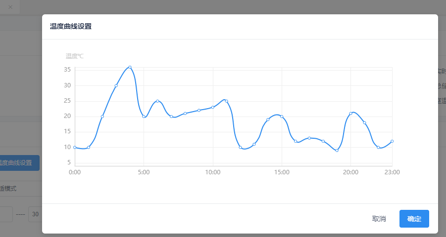

这是我第一次写博客，主要是记录下自己解决问题的过程和知识的总结，如有不对的地方欢迎指出来！
需求：点击btn,弹出modal显示图表（以折现图为例）
这应该是很基本的需求也是很容易实现的，代码和效果如下：
代码解释：setTem是一个方法，改变modal为true，默认为false ； chart-line是图表子组件，通过data向其传递参数，data绑定的数据是父组件mounted后拿到的数据
效果图：点击btn后的确显示了modal框，但是里面的图表不能显示，接着改变子组件任何代码，迫使重新编译子组件，则子组件的图表可以正常显示

分析：当点击btn时，modal框的确弹出来了，但推测其底层是使用v-show来实现显示与否，所以改变modal为true或fasle只是改变了样式的显示与隐藏，所以不会触发子组件的重新编译，父组件在mounted前，已经准备好了所有的视图，包括子组件的视图，只是这个时候由于modal的v-show=false,不能被观察到罢了。但是此时传给子组件的数据并没有拿到，所有子组件不能显示图表；当点击btn的时候，虽然此时父组件传给子组件的数据拿到了，但由于是通过v-show改变显示与否，子组件不会重新编译，当然不会去读取数据，就不会显示
解决办法：当点击的时候显示的促使子组件编译，给子组件套一个v-if,代码如下：
效果图：当每次点击的时候都会重新编译子组件，所以子组件在每次编译的时候都能拿到数据，自然能正常显示
总结：以上是对vue中使用iview的modal组件解决的一个小问题，推测其使用的是v-show来控制弹出层的显示与否，当子组件不是简单的显示基本信息而是要更新数据时就需要显示的促使其重新编译，否者数据无法得到更新。